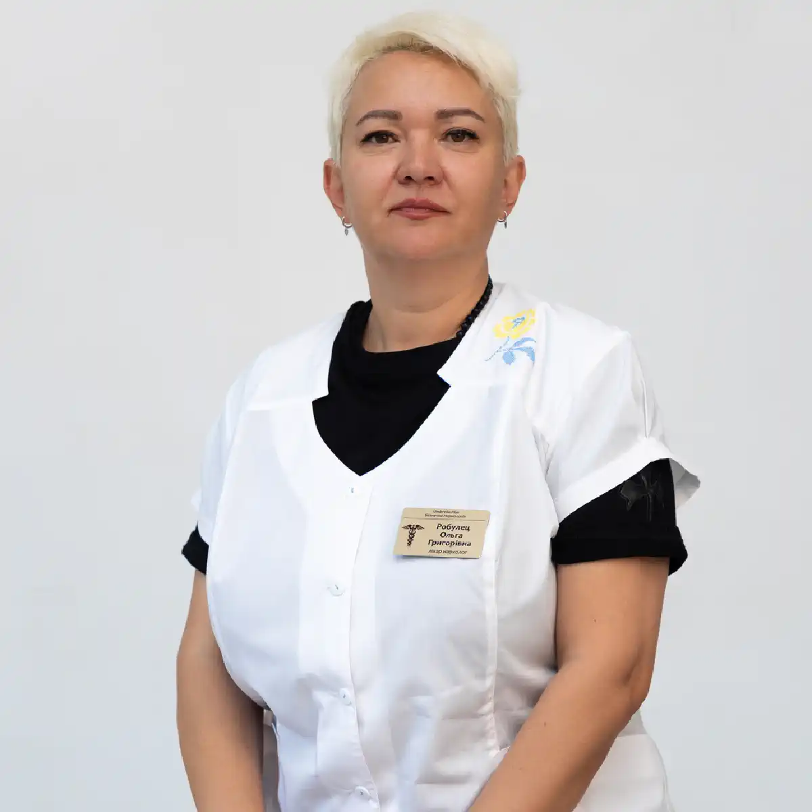

+38(068) 79 72 782
+38(068) 79 72 782Лікування наркоманії у Білгород-Дністровському
Шанс повернутися до життя без залежності


Безкоштовна консультація, працюємо цілодобово 24/7
Шанс повернутися до життя без залежності

Лікування наркоманії в Білгород-Дністровському — це комплексний медичний процес, спрямований на усунення фізичної залежності, відновлення психоемоційного стану та запобігання рецидивам. Наркотична залежність справляє руйнівний вплив на організм: страждають внутрішні органи, порушується робота нервової системи, погіршується когнітивна функція та загальна якість життя. Крім того, залежність призводить до соціальної ізоляції, конфліктів у сім’ї та втрати професійної реалізації.
Наркоманія — це хронічне захворювання, яке не минає самостійно і потребує системного підходу до лікування. Без кваліфікованої допомоги стан пацієнта з часом погіршується, а ризик серйозних ускладнень і передозування значно зростає.
Сучасні методи лікування дозволяють безпечно пройти етап детоксикації, стабілізувати стан пацієнта та вибудувати ефективну програму відновлення. Терапія підбирається індивідуально і може включати медикаментозну підтримку, психотерапію, а також реабілітаційні заходи, спрямовані на формування стійкої ремісії. Комплексний підхід дає можливість не лише усунути фізичну залежність, а й опрацювати психологічні причини вживання, відновити внутрішні ресурси та повернути людину до повноцінного життя без наркотиків.
Розпізнати наркотичну залежність на ранній стадії вкрай важливо, оскільки саме в цей період лікування проходить швидше, легше і з меншими ризиками для здоров’я. На початкових етапах ознаки можуть бути неочевидними, проте з часом вони посилюються і починають зачіпати всі сфери життя людини — фізичну, психологічну та соціальну. Основні ознаки наркотичної залежності:
Додатково можуть спостерігатися порушення сну, зниження концентрації уваги, втрата мотивації та інтересу до життя, а також скритність і зміна поведінки. При появі цих симптомів важливо не відкладати звернення за професійною допомогою. Чим раніше розпочато лікування, тим вища ймовірність повного відновлення та повернення до нормального, здорового життя.
Існує кілька основних груп наркотичних речовин, кожна з яких справляє виражений і руйнівний вплив на організм людини. Попри відмінності в механізмі дії, всі вони призводять до формування залежності, порушення роботи внутрішніх органів і серйозних змін психіки. До основних груп належать:
Безпечних наркотиків не існує. Незалежно від виду речовини, їх вживання поступово руйнує організм: страждають печінка, серце, мозок, імунна та нервова системи. Крім фізичної шкоди, розвивається психологічна залежність, яка робить людину вразливою до зривів і ускладнює процес відновлення.
Наркоманія — це хронічне прогресуюче захворювання, яке зачіпає не лише фізичний стан людини, а й її психіку, поведінку та спосіб життя. Без професійного медичного втручання впоратися із залежністю вкрай складно: самостійні спроби найчастіше закінчуються зривами, погіршенням стану та посиленням проблеми. Причина в тому, що залежність формується на кількох рівнях одночасно — фізичному та психологічному. Організм звикає до речовини, а психіка закріплює поведінкові моделі, пов’язані із вживанням. Тому для ефективного лікування необхідний комплексний підхід за участю фахівців. Професійне лікування наркоманії включає:
Додатково може включатися етап реабілітації, спрямований на соціальне відновлення, повернення до нормального життя та профілактику рецидивів. Комплексний і поетапний підхід дає стійкий результат. Він дозволяє не просто тимчасово припинити вживання, а змінити спосіб життя, зміцнити психоемоційний стан і значно знизити ризик повторного виникнення залежності.
Вартість лікування наркоманії в Білгород-Дністровському починається від 2499 грн.
| Популярні послуги | Ціна |
|---|---|
| Консультація нарколога | Від 1500 грн |
| Лікування наркоманії | Від 2499 грн |
| Крапельниця від наркотиків | Від 2499 грн |
| Виведення із запою вдома | Від 2199 грн |
Детоксикація — це перший і один із найважливіших етапів лікування наркотичної залежності, спрямований на очищення організму від токсичних речовин та продуктів їхнього розпаду. У цей період відбувається зняття гострої інтоксикації та стабілізація стану пацієнта, що створює основу для подальшого лікування. Після тривалого вживання наркотиків організм відчуває серйозне навантаження: порушується робота внутрішніх органів, страждає нервова система, погіршується загальне самопочуття. Саме тому детоксикація має проводитися під медичним контролем, з використанням безпечних та ефективних методів. Процедура дозволяє:
Додатково під час детоксикації застосовуються інфузійні розчини, вітаміни, препарати для підтримки печінки, серця та нервової системи. Це допомагає прискорити відновлення і знизити ризик ускладнень. Детоксикація проводиться під постійним контролем лікаря, що забезпечує безпеку пацієнта і дозволяє за необхідності оперативно коригувати лікування. Правильно проведений перший етап значно підвищує ефективність усієї програми лікування залежності.
Ломка — це один із найважчих і болючих станів, який виникає при відмові від наркотичних речовин. Вона супроводжується вираженими фізичними та психоемоційними симптомами: сильними болями в тілі, тривожністю, дратівливістю, безсонням, ознобом, пітливістю та різким погіршенням загального самопочуття. У деяких випадках стан може бути настільки важким, що становить загрозу для здоров’я і потребує обов’язкового медичного втручання. Самостійно перенести ломку вкрай складно і небезпечно, оскільки цей стан нерідко призводить до зривів, а також може супроводжуватися ускладненнями з боку серцево-судинної та нервової системи. Саме тому оптимальним рішенням є проходження цього етапу під контролем лікаря. Під медичним наглядом проводиться:
Часто застосовуються медикаменти, спрямовані на полегшення симптомів відміни та прискорення відновлення організму. Лікар контролює динаміку стану пацієнта і за необхідності коригує лікування. Грамотний підхід дозволяє пройти період відміни максимально безпечно, знизити ризик ускладнень і підготувати пацієнта до наступного етапу — психологічного лікування та реабілітації.
Залежність має глибокі психологічні причини і формується не лише на рівні звички, а й на рівні мислення, емоцій та життєвих сценаріїів. Часто за вживанням стоять внутрішні конфлікти, стрес, тривожність, травматичний досвід або нездатність справлятися з труднощами без психоактивних речовин. Саме тому робота з психологом є обов’язковою і найважливішою частиною лікування. Психотерапія дозволяє не просто тимчасово відмовитися від вживання, а глибоко опрацювати причини залежності та сформувати стійкі зміни в поведінці та сприйнятті. Це ключовий етап, без якого домогтися тривалої ремісії значно складніше. Психотерапія допомагає:
У процесі терапії формуються навички самоконтролю, підвищується усвідомленість і зміцнюється мотивація до тверезого способу життя. Людина вчиться по-новому реагувати на життєві ситуації, вибудовувати здорові стосунки та знаходити ресурси для відновлення. Без цього етапу ризик зриву значно вищий, оскільки залишаються невирішені психологічні причини залежності. Саме тому комплексне лікування, що включає психотерапію, дає найбільш стійкий і довгостроковий результат.
Реабілітація — це найважливіший етап закріплення результату після основного лікування наркотичної залежності. Саме в цей період відбувається перехід від фізичного відновлення до повноцінного життя без вживання. У Білгород-Дністровському реабілітація спрямована на повернення людини до соціальної активності, відновлення особистості та формування стійкої тверезості. Після детоксикації та зняття ломки пацієнту необхідно навчитися жити без наркотиків, справлятися зі стресом, вибудовувати стосунки та приймати рішення без повернення до колишніх моделей поведінки. Без цього етапу ризик зриву залишається високим, навіть при доброму фізичному стані. Реабілітація наркозалежних включає:
Реабілітація може включати групові заняття, підтримку фахівців та поступове повернення до звичного життя в безпечному середовищі. Це допомагає закріпити результат лікування і сформувати стійкі зміни. Реабілітація є ключовим етапом на шляху до довгострокової ремісії. Саме вона дозволяє не просто відмовитися від наркотиків, а повністю змінити спосіб життя, відновити внутрішні ресурси та повернутися до повноцінного, здорового життя.
Анонімне лікування наркоманії дозволяє пройти терапію без розголошення особистих даних і зберегти повну конфіденційність на всіх етапах звернення. У Білгород-Дністровському це особливо важливо для пацієнтів, які хочуть зберегти свою репутацію, уникнути розголосу і отримати допомогу в максимально делікатній формі. Багато людей відкладають лікування саме через страх, що інформація стане відома оточуючим. Анонімний формат допомагає зняти цей бар’єр і зробити перший крок до одужання без тиску та додаткового стресу.
Повна анонімність означає, що особисті дані пацієнта не передаються третім особам і залишаються суворо конфіденційними. Лікування проходить у комфортних умовах, де людина почувається спокійно і безпечно, без зайвої уваги та осуду. При цьому відсутня постановка на облік, що особливо важливо для тих, хто турбується про свою репутацію та майбутнє.
Делікатний підхід з боку фахівців дозволяє вибудувати довірчі стосунки з пацієнтом, знизити рівень тривожності та створити умови для ефективного лікування. Такий формат допомоги допомагає не лише усунути наслідки вживання, а й почати повноцінний процес відновлення. Анонімне лікування — це можливість зберегти особисті кордони і водночас отримати якісну медичну та психологічну допомогу, необхідну для подолання залежності та повернення до здорового життя.
Крапельниця від наркотиків вдома — це ефективний медичний метод, який дозволяє швидко полегшити стан пацієнта і знизити вираженість симптомів інтоксикації або ломки в комфортних домашніх умовах. Інфузійна терапія застосовується як екстрена допомога і як перший етап лікування залежності, допомагаючи організму відновитися після вживання психоактивних речовин. Після прийому наркотиків в організмі накопичуються токсичні речовини, порушується робота внутрішніх органів, страждає нервова система та загальне самопочуття. У таких випадках крапельниця стає швидким і безпечним способом стабілізації стану без необхідності госпіталізації.
Процедура справляє комплексний вплив: сприяє виведенню токсинів з організму, знижує прояви ломки, зменшує тривожність, поліпшує загальне самопочуття і допомагає стабілізувати життєво важливі функції. Завдяки правильно підібраному складу розчинів нормалізується водно-сольовий баланс, підтримується робота серця, печінки та нервової системи, зменшується фізичний та емоційний дискомфорт.
Склад крапельниці підбирається лікарем індивідуально з урахуванням стану пацієнта, виду вживаної речовини, тривалості залежності та наявності супутніх захворювань. Це робить лікування максимально безпечним і ефективним. Проведення процедури вдома має ряд переваг: пацієнт отримує допомогу у звичній обстановці, зберігається повна конфіденційність, відсутній додатковий стрес, пов’язаний з поїздкою в клініку. Лікар контролює стан пацієнта на всіх етапах і за необхідності коригує терапію.
Крапельниця від наркотиків вдома — це швидкий спосіб полегшити стан і зробити перший крок до повноцінного лікування залежності, знижуючи ризики ускладнень і підготовлюючи організм до подальшого відновлення.
Самостійне лікування наркотичної залежності, як правило, не дає стійкого результату. Це пов’язано з тим, що залежність зачіпає не лише фізичний стан організму, а й глибоко впливає на психіку, мислення та поведінку людини. Навіть при тимчасовій відмові від вживання залишаються внутрішні причини, які з часом призводять до повернення до колишніх звичок.
Без професійної медичної та психологічної допомоги значно зростає ризик зриву, оскільки людина стикається з сильною тягою, стресом і відсутністю ефективних способів справлятися з труднощами. Одночасно погіршується загальний стан здоров’я: страждають внутрішні органи, нервова система, посилюються тривожність та емоційна нестабільність. З часом проблема тільки посилюється, переходячи у важчу форму залежності.
Крім того, самостійні спроби часто супроводжуються неправильним підходом до відмови від речовини, що може призвести до ускладнень, посилення симптомів ломки та небезпечних станів для організму. Ефективне лікування можливе тільки при комплексному підході, який включає медичну допомогу, контроль стану, медикаментозну підтримку та психотерапію. Такий формат дозволяє не лише припинити вживання, а й усунути причини залежності, відновити здоров’я та сформувати стійку ремісію.
Наркологічний центр UmbrellaPlus надає професійну допомогу при наркотичній залежності в Білгород-Дністровському та по всій області. Ми працюємо з різними формами залежності, допомагаючи пацієнтам безпечно пройти всі етапи лікування — від детоксикації до повної реабілітації. Наша команда забезпечує цілодобову допомогу, включаючи терміновий виїзд лікаря додому, що особливо важливо при гострих станах та необхідності негайного втручання. Для кожного пацієнта розробляються індивідуальні програми лікування з урахуванням стану здоров’я, стажу вживання та психологічних особливостей.
Особлива увага приділяється конфіденційності: лікування проходить анонімно, без постановки на облік та передачі даних третім особам. Ми створюємо комфортні умови, в яких пацієнт почувається спокійно і безпечно, що сприяє ефективнішому відновленню. Лікарі UmbrellaPlus супроводжують пацієнта на всіх етапах — від зняття інтоксикації та стабілізації стану до психологічної допомоги та профілактики зривів. Такий комплексний підхід дозволяє не лише позбутися залежності, а й відновити здоров’я, повернути контроль над життям і сформувати стійку ремісію.
Телефон для консультації та виклику лікаря: +38(050-021-69-57)

Так, ми суворо дотримуємося повної конфіденційності на всіх етапах лікування. Інформація про пацієнта, діагноз та проходження терапії не передається третім особам. Звернення до нас не тягне за собою постановку на облік. Ви можете бути впевнені у безпеці та анонімності.
Програма лікування розробляється індивідуально після консультації з фахівцем. Враховуються вид залежності, її тривалість, фізичний та психологічний стан пацієнта. Такий підхід дозволяє підвищити ефективність терапії та знизити ризик зриву. Ми не використовуємо шаблонні рішення.
Так, ми супроводжуємо пацієнтів і після основного курсу лікування. Проводяться консультації, рекомендації щодо адаптації та профілактики рецидивів. За потреби можлива подальша психологічна підтримка. Це допомагає зберегти результат та повернутися до повноцінного життя.
Анонимно

Помогли при наркотической зависимости
Номер телефону:
+380 (68) 797 27 82
+380 (50) 021 69 57
Адресу наркологічного центра вашого міста уточнюйте за
телефоном
Працюємо: Київ, Одеса, Львів, Харків, Дніпро, Запоріжжя,
Черкасах, Чугуєві, Чорноморську, Кам'янському
Telegram: t.me/umbrellaplus
Графік работы: Цілодобово